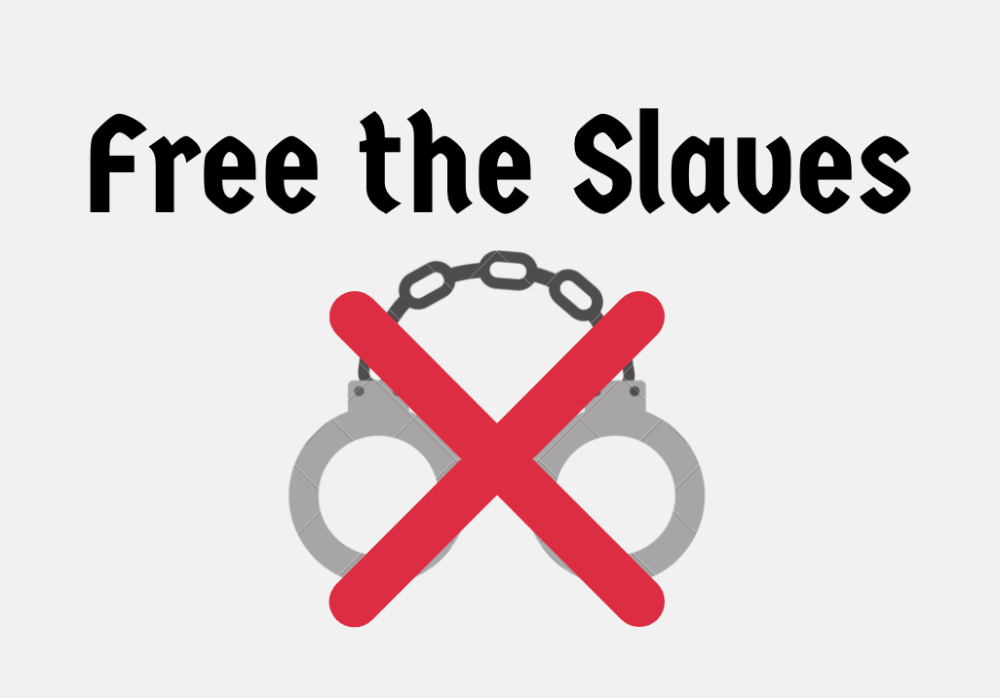
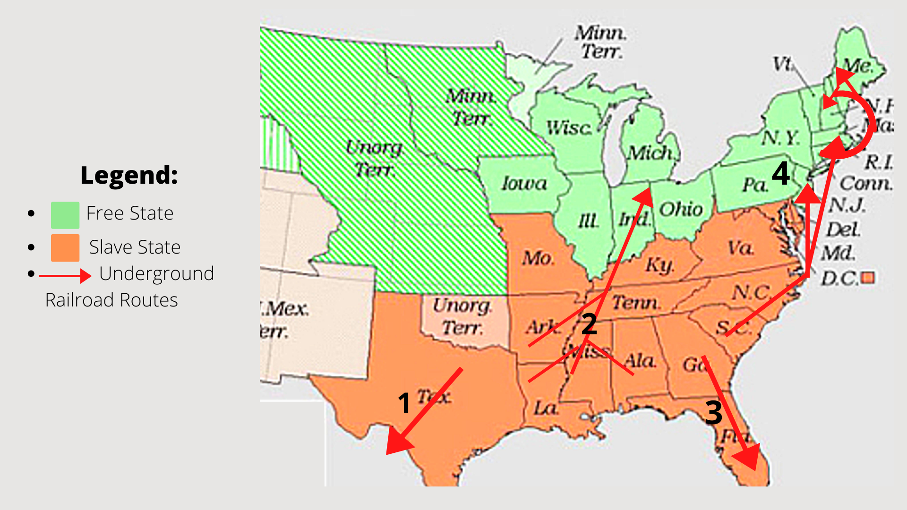

Background Info
If we had the technology we have today in the 1860s, slavery might have been different and it would have been easier to stop the spread of injustice
If the enslaved people in the 1860s had the technology that we have today, we would have been able to stop the spread of slavery. African Americans can communicate using their phones and talk to their families over Zoom about their experience in America and how they have been treated by the people there. With the idea of mass communication and the internet, enslaved people would have found it easier to find resources to escape and achieve freedom.
With the use of technology, it would have been easier to help fellow abolotionists like:
Our motive: ---
whatever our motive is
The Underground Railroad
[1]
This railroad takes slaves from Texas to Mexico. Slaves would have less chance of getting caught if they went to Mexico, as opposed to the free states
[2]
This railroad takes slaves from various slave states such as Arkansas, Lousiana, Mississippi, and Alabama to Indiana. Indeed strength in numbers.
[3]
This railroad takes slaves from Georgia through Florida, and out of the Gulf of Mexico. Some of the routes involved boat travel, and it was much more effective than travelling on foot./
[4]
This railroad takes slaves from North Carolina as well as South Carolina to any area in the east coast. The journey would be long from some short for others, but there was that off chance they could be caught by Virginia or Maryland and taken in there.